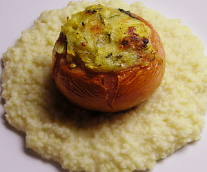

Vegetarisch gefüllte Tomate auf Goldhirsenring
4,5 von 6Pro Person 2 Fleischtomaten aushölen. Die ausgehöhlte Masse in einer Pfanne einköcheln. In einer Bratpfanne eine Zwiebel, etwas Knoblauch und einen grossen Zucchetti andämpfen. Mit Weisswein ablöschen. Etwas Rahm dazugeben und ein wenig einkochen. 200 g Gruyere-Käse raffeln und dazugeben, mit Salz und Pfeffer würzen. Frischen Salbei und Basilikum dazugeben, die Tomaten damit füllen und bei 200 g ca. 20 Minuten überbacken. Auf einem Goldhirsering servieren.
